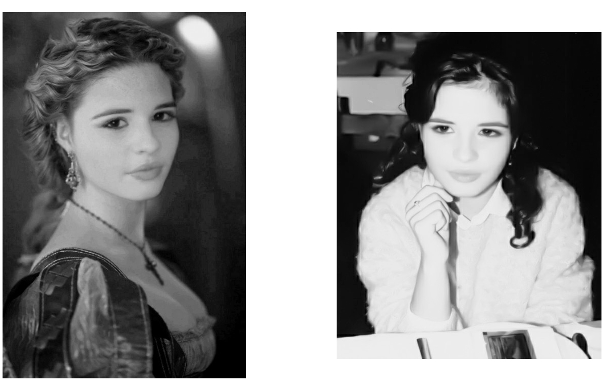

An insignificant story
I wish to talk about a little girl/ A girl that once I knew so well/ She was not big nor she was tall/ She was so tiny, and so small/ When she reached five, she went to school/ Aced all her classes to the full/ But in those times that was not cool/ So, to fit in, she played the fool/ Two boys from class, they used to beat her/ At first her mom could not believe it/ Her daddy said: “Defend yourself”/ She pulled the hair out of their heads/ When she was forced to tutor them/ Because in class they were so lame/ She really pushed them to the edge/ Victory small -but great revenge/ With this and that, they failed the class/ And she got rid of them at last/
She had a vivid fantasy, lived in a world no -one could see/ When she was asked, “what will you be?”/ Replied: “a Dolphin in the sea”/ She loved the Myths and Tolkien’s Elves/ Unicorns, Fairies, and their Tales/ From empty pages, she made worlds/ Lost in the magic of the words/ After sometime found out she could draw/ Copied from comics like “The Crow”/ She was a senior at the school/ Her favourite book was “Steppenwolf”/
But still she was not satisfied/ So, in to Art School she applied/ “Maybe this way, I’ll earn a living/ And have the tools to make worlds vivid”/ With black ‘n’ white portraits she went by/ And that was o.k. for a while/ And logos, posters and the likes/ She ‘d stay up sleepless most of nights/ Money was good back in those days/ Should you have skills for such a trade/ She had a rule about the work/ When weekend comes everything stops/ She ‘d go and party with her friends/ Just like tomorrow world would end/ But still she was not satisfied/ Still, could her worlds come more alive?/ Back in those days, poor CGI!!!/ Seemed pointless but she had to try!!!/
"DeepFake of Lucrezia Borgia, from the tv series "The Borgias"(img1) by 'Reface app'
Original Photo -Senior High(img2), copyright©: mariavarg"
So, different books she went and bought/ With Autodesk guides at the top/ She even studied AutoCAD/ To upgrade the skills, she already had/ 3DSMax became her friend/ Maya would even come to aid/ First project was -can’t be forgotten/ Building a gothic house with garden/ Although the thing she really liked/ Was 3D Character Design/ But still, after a while, she was not really satisfied/ Now that she could stage her script/ Let’s have real people acting it/ “What am I missing from my heels?/ Costume Design and Lighting Skills”/ She had an aunt who was a tailor/ She thought “I’ll ask her for a favor”/ “Can you dear aunt see my design/ And bring my fantasy to life?”/
Then she applied to university/ And found the best teacher she could meet/ Lighting Design for two semesters/ She seeked the knowledge, not the papers/ But even then, after a while, she was not really satisfied/ “Why design fake scenery, thus limiting my fantasy?/ Let’s bring together all my skills/ Let’s try them out, see how that feels”/ She found a course -for movie graphics/ Maybe this was for her to practice/ She was so happy but alas/ The course she found was too advanced/ Advanced Programming was required/ And this fact stopped her from applying/
Well, time runs quick, and oh! So fast!/ I was that girl back in the past/ If we deserve a second chance/ This is beginning -not the end/ All my achievements -all of my fails/ Have brought me where I stand today/ So, this is what I want to say: / Thank you for broadening my mind/ For being so giving and so kind/ For all the sweat you shed in class/ Bringing programming to the mass/ For all the excellent work you ‘ve done/ It’s “Hello World” -D. J. Malan!!!/
copyright©: mariavarg